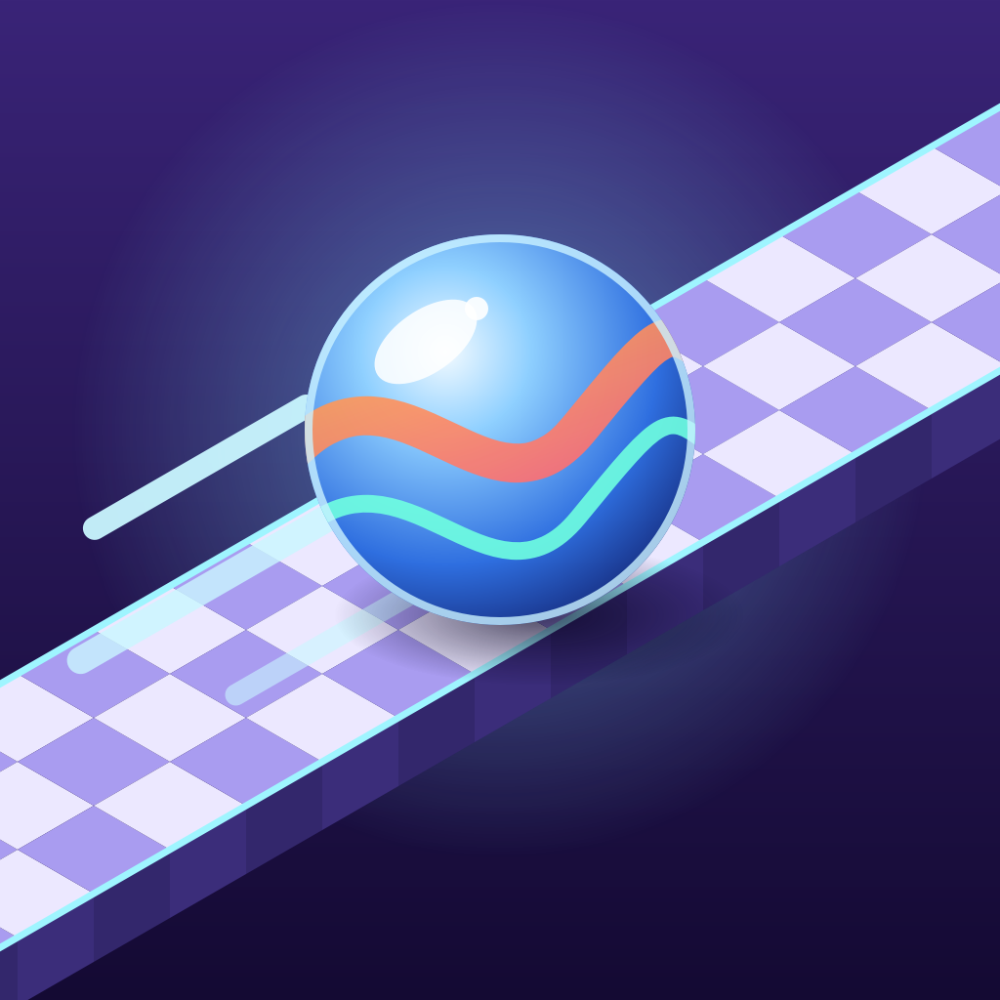

Carreras de Canicas
Español
Guía tu canica por circuitos en 3D inclinando el móvil. Esquiva trampas y enemigos, llega a la meta antes de que se acabe el tiempo y compite con tus amigos en carreras por Wi‑Fi.
Preguntas frecuentes
La canica va en sentido contrario al que inclino
En Opciones, activa Invertir izquierda / derecha o Invertir delante / detrás.
La canica se mueve sola o demasiado
Sujeta el móvil en la posición cómoda y pulsa Recalibrar. En Opciones puedes subir la inclinación máxima para que sea menos sensible.
No encuentro la partida de mi amigo en «Carrera Wi‑Fi»
Todos los dispositivos deben estar conectados a la misma red Wi‑Fi. Si la partida no aparece en la lista, usa Unirse por IP con la dirección que muestra la sala del anfitrión. En iPhone, permite el acceso a la red local cuando el sistema lo pregunte (Ajustes → Privacidad → Red local).
¿El juego necesita internet?
No. Se juega sin conexión; la carrera Wi‑Fi solo usa tu red local.
Contacto
¿Has encontrado un error o tienes una sugerencia? Escríbenos abriendo una incidencia:
English
Guide your marble through 3D tracks by tilting your phone. Dodge traps and enemies, reach the finish before time runs out and race your friends over Wi‑Fi.
Frequently asked questions
The marble moves the opposite way to how I tilt
In Options, turn on Invert left / right or Invert forward / back.
The marble drifts or feels too sensitive
Hold your phone in a comfortable position and tap Recalibrate. In Options you can raise the max tilt to make it less sensitive.
I can't find my friend's game in "Wi‑Fi race"
All devices must be on the same Wi‑Fi network. If the game doesn't show up in the list, use Join by IP with the address shown in the host's lobby. On iPhone, allow local network access when asked (Settings → Privacy → Local Network).
Does the game need internet?
No. It works offline; the Wi‑Fi race only uses your local network.
Contact
Found a bug or have a suggestion? Get in touch by opening an issue: